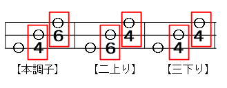

問 一
「四本」って、
糸が4本あるの？
答え
違います。三味線の糸は3本です。
「四本」の「本」は、糸の本数ではありません。三味線をどの高さの音に合わせるかを示す呼び方です。
一の糸いちばん太い糸
二の糸まんなかの糸
三の糸いちばん細い糸
開放弦（かいほうげん）
左手で糸を押さえずに鳴らした音のことです。
絲庵 ─ Shamisen ─
知ると、三味線がもっと楽しい
むずかしい言葉を、
ひとつずつほどいてみましょう。
項目をタップすると、そのお話へ移動します。
はじめに
三味線を始めると、「今日は六本です」「二上りに合わせてください」という言葉が出てきます。
初めて聞くと難しそうですが、次の2つに分けると、すっきり理解できます。
「〇本」音全体の高さ
「調子」3本の糸の音の並べ方
問 一
違います。三味線の糸は3本です。
「四本」の「本」は、糸の本数ではありません。三味線をどの高さの音に合わせるかを示す呼び方です。
一の糸いちばん太い糸
二の糸まんなかの糸
三の糸いちばん細い糸
開放弦（かいほうげん）
左手で糸を押さえずに鳴らした音のことです。
問 二
調弦するときの、基準となる音の高さです。
この調弦アプリでは、一の糸の開放弦を基準にしています。
| 本数 | 音名 | ドレミ |
|---|---|---|
| 1本 | A | ラ |
| 2本 | A♯ | ラ♯ |
| 3本 | B | シ |
| 4本 | C | ド |
| 5本 | C♯ | ド♯ |
| 6本 | D | レ |
| 7本 | D♯ | レ♯ |
| 8本 | E | ミ |
| 9本 | F | ファ |
| 10本 | F♯ | ファ♯ |
| 11本 | G | ソ |
| 12本 | G♯ | ソ♯ |
たとえば四本なら、一の糸を
ド（C）に合わせます。
問 三
1本上がるごとに、音が半音ずつ高くなります。
歌い手の声や、ほかの楽器の高さに合わせるために、本数を変えます。
カラオケでキーを上げ下げするのに少し似ています。ただし、「〇本」は曲のキーそのものとは限りません。正確には、調弦の基準となる高さです。
項目一覧へ戻る問 四
3本の糸を、どのような音の間隔にするかという決まりです。
| 調子 | 一の糸 | 二の糸 | 三の糸 |
|---|---|---|---|
| 本調子 | ド C | ファ F | ド C |
| 二上り | ド C | ソ G | ド C |
| 三下り | ド C | ファ F | ラ♯ A♯ |
変わるのは、二上りでは二の糸、三下りでは三の糸です。
項目一覧へ戻る問 五
一の糸から順に「レ・ラ・レ」です。
「六本」と「二上り」を分けて、順番に考えます。
六本なので、一の糸はレ（D）
二上りなので、二の糸を高くする
三の糸は、一の糸より1オクターブ高いレ（D）
一の糸レD
二の糸ラA
三の糸レD・高
問 六

一の糸で基本の高さを決める
一の糸で基本の高さを決める
一の糸で基本の高さを決める
「〇本」音全体の高さ
「調子」3本の糸の音の並べ方
「六本の二上り」と言われたら、六本で高さを決め、二上りで3本の音の並びを決める。この2段階で考えれば大丈夫です。